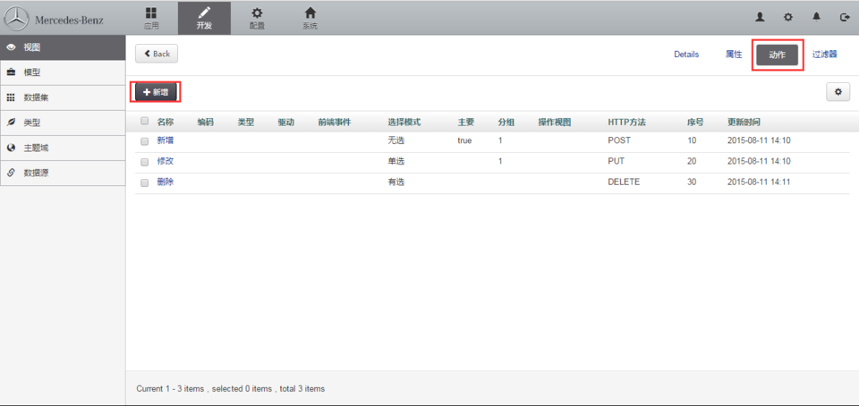
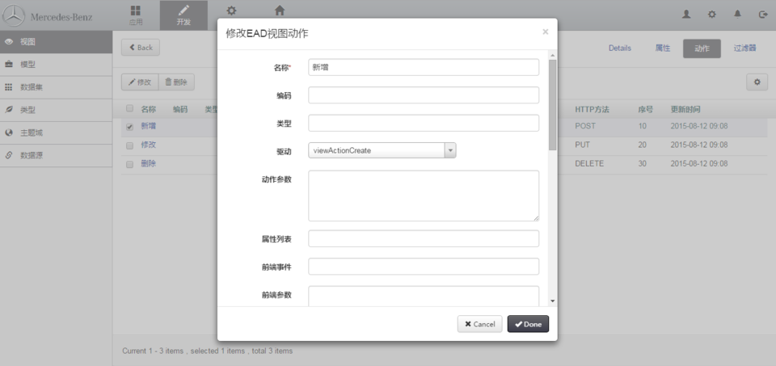

创建视图动作
菜单路径：开发 > 视图 > 动作

点击"新增"动作按钮，开始新建视图动作，或者选定已经存在的视图动作，对该视图动作进行"修改，删除"操作。

- 名称：动作名称，即显示到界面上按钮的名称
- 编码：动作编码，使用英文字符。新增、修改、删除时无需设置
- HTTP方法：HTTP方法
- POST：新增数据或其他非更新数据操作采用该HTTP方法
- PUT：更新数据时，选择该HTTP方法
- DELETE：删除数据时，选择该HTTP方法
- 驱动：通用新增、修改、删除无需设置，其他需要选择相应的驱动
- 动作参数：通用新增、修改、删除无需设置，其他按需要设置，注意该项必须设置为JSON格式
- 属性列表：当前动作可操作的视图属性列表中的子集
- 前端事件：通用新增、修改、删除无需设置，其他需要按需设置（系统通用的前端事件见：附录 > Rainbow 附录 > 通用动作事件）
- 前端参数：归前端使用
- 图标：界面按钮上显示的图标
- 选择模式：数据选择不同，可进行的操作不同
- 无选，无选时，出现该按钮
- 单选，单选时，出现该按钮
- 有选，有选时，出现该按钮
- 多选，多选时，出现该按钮
- 主要：设置为主要，颜色会在界面加深
- 分组：设置分组后，按钮会分组显示
- 操作视图：默认该按钮操作当前视图，可设置该按钮操作不同视图
工作流模型：若当前是工作流相关的操作，则需要设置工作流模型。
当视图动作为上报、审批、审批查询时；
显示模式：暂不设置
常用视图动作配置见：“7. Common Settings”